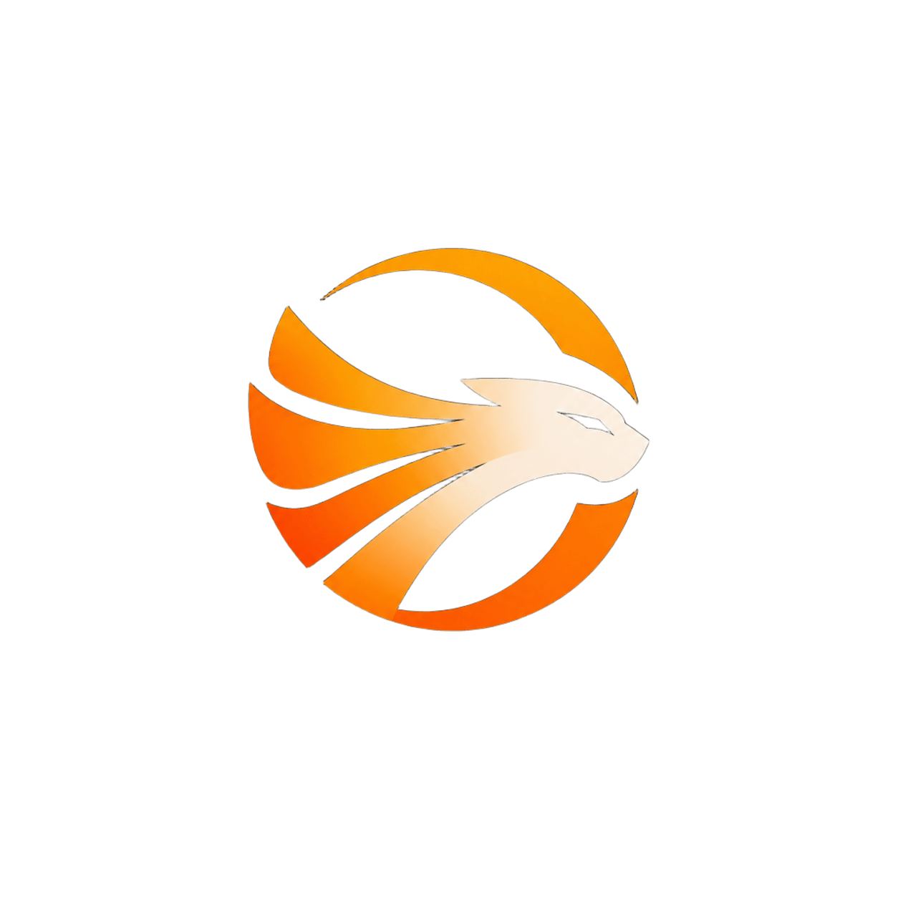
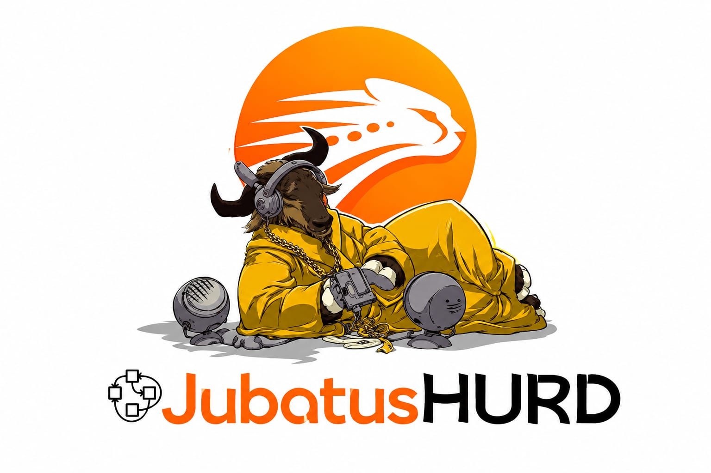
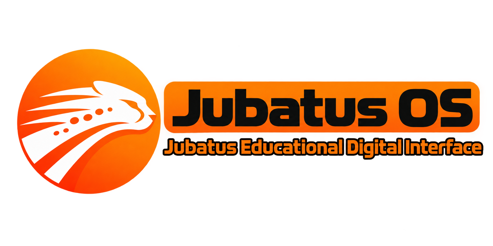
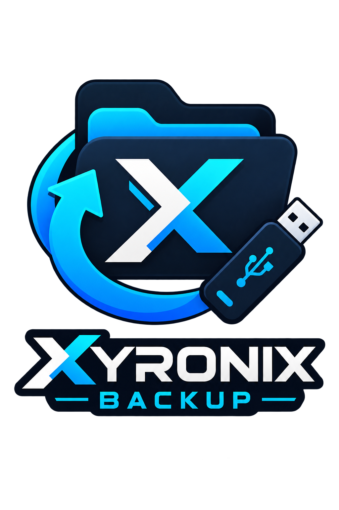

Xyronix Studios
İşletim Sistemi ve Yazılım Projeleri
Xyronix Studios, özgün işletim sistemi, çekirdek mimarileri, sistem yazılımı ve yardımcı araçlar geliştiren bağımsız bir teknoloji stüdyosudur. Projelerimiz; farklı donanım mimarileri, özel paket yönetim sistemleri ve yenilikçi masaüstü ortamları üzerine odaklanmaktadır.
Xyronix Studios Hakkında
Xyronix Studios, Eren Mut'un liderliğinde ve İnanç İnce'nin değerli katkılarıyla geliştirme faaliyetlerine devam etmektedir. Jubatus OS, Solara OS, Jubatus Hurd ve Jubatus Jedi gibi işletim sistemi projelerinin yanı sıra Xyronix Backup V3 Pro gibi profesyonel yazılım araçları da stüdyomuz tarafından geliştirilmektedir.
İşletim Sistemi Projeleri
Farklı donanım mimarileri ve kullanım senaryoları için geliştirilen özgün işletim sistemi projelerimiz.
Jubatus OS 2.0
64-bit | Ana SürümGünlük kullanım hedefiyle geliştirilen, modern masaüstü deneyimi ve geniş donanım desteği sunmayı amaçlayan 64-bit işletim sistemi projesidir.
- GNOME Masaüstü Ortamı
- jps-64 Paket Yöneticisi Altyapısı
- Optimizasyon ve Kararlılık Odaklı

Jubatus Lite 1.0
32-bit & 64-bit | Hafif SistemDüşük donanımlı ve eski bilgisayarlar için optimize edilmiş, hafif kaynak tüketimi sunmayı hedefleyen sistem sürümüdür.
- Hafif XFCE Masaüstü Arayüzü
- jps-32 / jps-64 Paket Yöneticisi Desteği
- Düşük Donanım Tüketimi
Solara OS 1.0
64-bit | Bağımsız DepoXFCE masaüstü ortamını kullanan ve kendi solpkg paket yönetimi ile bağımsız paket deposunu sunmayı hedefleyen bir Linux tabanlı işletim sistemi projesidir.
- XFCE Masaüstü Deneyimi
- Özel solpkg Paket Sistemi
- Linux Tabanlı Altyapı

Jubatus Hurd 1.0
Deneysel | Test SürümüGNU/Hurd altyapısı üzerinde geliştirilen, özel sistem araçları ve paket yönetimi entegrasyonlarını denemeyi amaçlayan deneysel bir işletim sistemi projesidir.
- GNU/Hurd Çekirdek Altyapısı
- APT ve JPS Entegrasyonu
- Geliştirici Test Sürümü

Jubatus Jedi
Dokunmatik | Akıllı Tahta SürümüDokunmatik akıllı tahtalar için özel olarak optimize edilmiş; eğitim ve sunum odaklı arayüz deneyimi sunan Jubatus Educational Digital Interface sürümüdür.
- Dokunmatik Akıllı Tahta Optimizasyonu
- Jubatus Educational Digital Interface
- Eğitim ve Sunum Odaklı Deneyim
Stüdyo Yazılım Araçları
İşletim sistemlerimizi tamamlayan profesyonel masaüstü araçları ve yardımcı yazılımlar.

Xyronix Backup V3 Pro
Kararlı Sürüm | Masaüstü AracıAkıllı delta yedekleme, snapshot sistemi, anlık geri yükleme, duraklatma/iptal özellikleri ve disk alanı kontrolü sunan profesyonel yedekleme aracı.
- Akıllı Delta Yedekleme & Snapshot
- Geri Yükleme ve Disk Alanı Kontrolü
- Modern Koyu Tema & Tkinter Arayüzü